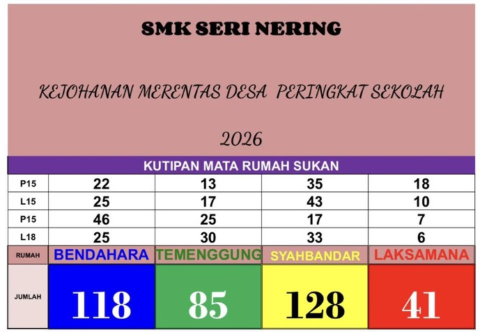

SESI 4 · LATIHAN TRANSFORMASI VISUAL
Satu imej data, pelbagai hasil digital.
Gunakan Google Gemini untuk mengekstrak dan mengesahkan data, kemudian mengubahnya menjadi infografik, poster, dashboard dan laman web yang boleh diterbitkan melalui GitHub Pages.

SUMBER TUNGGAL
Bezakan fakta, kiraan dan perkara kabur
AI mesti membaca imej sebelum mereka bentuk. Jangan gunakan visual yang cantik jika angka atau labelnya salah.
Semakan manusia wajib: Imej menunjukkan satu label
baris yang kelihatan berulang atau kurang jelas. Peserta mesti
menandainya sebagai PERLU DISAHKAN, bukan membetulkannya
secara andaian. Semak juga bahawa jumlah setiap lajur sama dengan
jumlah akhir.
ALIRAN LATIHAN
12 langkah daripada imej kepada penerbitan digital
Gunakan hasil yang telah disahkan sebagai sumber tunggal untuk semua format seterusnya.
1Ekstrak2Sahkan3Infografik4Poster5Dashboard6Kod dashboard7Web8Sosial9Slaid10Video11Akses12Audit
PROMPT LANGKAH DEMI LANGKAH
Semak setiap output sebelum meneruskan
Muat naik imej sumber ke Google Gemini. Jalankan Prompt 1 dan 2 dahulu supaya semua hasil menggunakan data yang sama.
Ekstrak data daripada imej
Tujuan: Membina sumber data berstruktur tanpa mereka maklumat.
Bertindak sebagai pegawai data dan komunikasi. Teliti imej keputusan Kejohanan Merentas Desa SMK Seri Nering 2026 yang saya muat naik. Ekstrak semua tajuk, label baris, nama rumah sukan, mata setiap baris dan jumlah akhir. Hasilkan: 1. transkripsi tepat seperti yang kelihatan pada imej; 2. jadual Markdown yang kemas; 3. data CSV dalam blok kod; 4. senarai teks atau angka yang kabur, berulang atau tidak pasti. Jangan membetulkan label secara andaian. Tandakan perkara yang tidak jelas sebagai [PERLU DISAHKAN]. Jangan cipta nama acara, kelas, peserta atau markah.
Sahkan kiraan dan kedudukan
Gunakan jadual yang diekstrak. Semak jumlah setiap rumah sukan dengan formula jumlah mata semua baris bagi lajur tersebut. Tunjukkan pengiraan satu demi satu. Bandingkan jumlah yang dikira dengan jumlah akhir pada imej. Susun kedudukan rumah sukan daripada mata tertinggi kepada terendah dan kira beza mata dengan rumah di kedudukan sebelumnya. Jika ada percanggahan, jangan pilih satu nilai secara senyap; laporkan sebagai [PERLU DISAHKAN]. Hasilkan “DATA DISAHKAN V1” dalam jadual dengan lajur: rumah sukan, mata dikira, mata dipaparkan, status semakan, kedudukan dan beza mata. Data ini menjadi sumber tunggal untuk semua langkah berikutnya.
Tukarkan kepada infografik menarik
Gunakan hanya DATA DISAHKAN V1 untuk menghasilkan infografik keputusan Kejohanan Merentas Desa SMK Seri Nering 2026. Format menegak 1080 × 1350 piksel. Paparkan tajuk ringkas, juara dengan penegasan paling jelas, kedudukan 1 hingga 4, jumlah mata setiap rumah, beza mata dan satu carta bar mendatar. Gunakan warna rumah: Bendahara biru, Temenggung hijau, Syahbandar kuning dan Laksamana merah. Pastikan teks Bahasa Melayu tepat, kontras tinggi, angka besar dan mudah dibaca pada telefon. Jangan tambah logo, maskot, nama peserta, angka atau pencapaian yang tiada dalam DATA DISAHKAN V1. Jika ada label belum disahkan, jangan paparkannya sebagai fakta.
Tukarkan kepada poster keputusan
Reka poster pengumuman keputusan “Kejohanan Merentas Desa Peringkat Sekolah 2026” berdasarkan DATA DISAHKAN V1. Format A4 menegak dan sesuai untuk cetakan. Gunakan gaya bertenaga bertemakan larian sekolah, tetapi kekalkan hierarki maklumat yang jelas: nama sekolah, nama kejohanan, tahun, tajuk “Keputusan Rasmi”, rumah juara, semua kedudukan dan jumlah mata. Gunakan empat warna rumah secara konsisten serta ilustrasi pelari yang tidak menutup data. Gunakan Bahasa Melayu yang betul. Jangan masukkan tarikh, tempat, logo, nama individu, slogan atau penaja yang tidak diberikan. Pastikan semua angka sama tepat dengan DATA DISAHKAN V1.
Rancang dashboard interaktif
Bertindak sebagai pereka dashboard data. Berdasarkan DATA DISAHKAN V1, cadangkan dashboard keputusan rumah sukan yang ringkas dan mudah digunakan. Sediakan spesifikasi bagi: 1. empat kad KPI jumlah mata; 2. kad juara dan margin kemenangan; 3. carta bar kedudukan; 4. carta berkelompok mata mengikut baris/kategori yang disahkan; 5. jadual terperinci; 6. penapis kategori jika label telah disahkan; 7. nota sumber dan masa kemas kini. Nyatakan tujuan setiap visual, medan data, jenis interaksi, warna, paparan mudah alih, keadaan data kosong dan mesej ralat. Elakkan carta pai kerana perbandingan empat jumlah lebih jelas melalui carta bar.
Hasilkan dashboard HTML
Gunakan spesifikasi dashboard yang telah diluluskan dan DATA DISAHKAN V1. Hasilkan dashboard interaktif sebagai projek statik yang boleh dibuka tanpa pelayan. Sediakan fail lengkap: - dashboard.html - css/dashboard.css - js/dashboard.js - data/keputusan.json Gunakan HTML semantik, CSS responsif dan JavaScript biasa. Gunakan Chart.js melalui CDN untuk carta dan sediakan jadual HTML sebagai alternatif jika carta gagal dimuatkan. Tambahkan penapis yang relevan, butang “Tetapkan Semula”, kapsyen carta, tooltip, fokus papan kekunci dan paparan telefon. Jangan reka data. Simpan semua data hanya dalam keputusan.json. Berikan struktur folder, kemudian kandungan penuh setiap fail dalam blok kod berasingan dengan nama fail yang jelas.
Bina laman GitHub Pages
Bina laman mikro yang cantik dan menarik untuk menerbitkan keputusan Kejohanan Merentas Desa SMK Seri Nering 2026 melalui GitHub Pages. Pakej mesti mengandungi: - index.html sebagai halaman utama; - dashboard.html; - css/style.css dan css/dashboard.css; - js/main.js dan js/dashboard.js; - data/keputusan.json; - assets/README.txt untuk panduan imej; - README.md dengan langkah muat naik ke GitHub Pages; - .nojekyll. Halaman utama mesti mempunyai hero ringkas, keputusan empat rumah, juara, carta ringkas, pautan ke dashboard, metodologi pengiraan, nota sumber dan footer. Gunakan reka bentuk responsif, pantas, mesra akses dan empat warna rumah secara terkawal. Tiada framework atau proses build diperlukan. Berikan struktur folder dan kandungan PENUH setiap fail. Pastikan semua pautan menggunakan laluan relatif, tiada fail hilang, tiada data rekaan dan laman boleh berfungsi apabila index.html dibuka.
Sediakan versi media sosial
Adaptasikan infografik yang diluluskan kepada tiga format tanpa mengubah fakta: A. Instagram/Facebook 1080 × 1080; B. Instagram Story/WhatsApp Status 1080 × 1920; C. paparan skrin 1920 × 1080. Bagi setiap format, jelaskan susunan elemen, saiz relatif tajuk, kedudukan juara, carta, kedudukan rumah dan ruang selamat. Kekalkan warna rumah dan jumlah mata yang sama. Hasilkan juga kapsyen Bahasa Melayu maksimum 80 patah perkataan dengan nada meraikan semua rumah sukan, bukan hanya pemenang. Jangan tambah hashtag atau fakta yang tidak diberikan.
Hasilkan slaid ringkas
Sediakan kandungan slaid 16:9 sebanyak 5 slaid untuk taklimat keputusan kepada warga sekolah. Slaid 1: tajuk dan konteks; Slaid 2: kedudukan keseluruhan; Slaid 3: carta mata; Slaid 4: perbandingan serta pemerhatian berasaskan data; Slaid 5: penghargaan kepada semua rumah sukan. Untuk setiap slaid, berikan tajuk pendek, maksimum tiga isi, cadangan visual dan nota penyampai 30–45 saat. Gunakan hanya DATA DISAHKAN V1. Bezakan fakta daripada interpretasi dan jangan membuat sebab-musabab yang tidak disokong.
Cipta video keputusan 10 saat
Hasilkan storyboard dan prompt video 10 saat berformat menegak 9:16 untuk mengumumkan keputusan rumah sukan. 0–2 saat: tajuk kejohanan; 2–6 saat: empat bar berwarna meningkat mengikut jumlah mata sebenar; 6–9 saat: rumah juara diserlahkan; 9–10 saat: mesej “Tahniah kepada semua rumah sukan”. Gunakan peralihan lancar, tipografi tebal dan muzik instrumental sukan yang ceria tanpa vokal. Pastikan susunan, warna dan angka tepat berdasarkan DATA DISAHKAN V1. Jangan tambah foto murid, logo, maskot, tarikh, tempat atau keputusan lain. Teks mesti kekal jelas dan tidak berubah bentuk sepanjang video.
Semak aksesibiliti dan keterbacaan
Audit infografik, poster, dashboard dan laman web yang telah dihasilkan dari sudut aksesibiliti. Semak kontras warna, saiz teks, hierarki, kebolehbacaan pada telefon, penggunaan warna bagi buta warna, alt text, label borang, navigasi papan kekunci, fokus yang kelihatan, kapsyen carta, jadual alternatif dan bahasa yang mudah difahami. Jangan bergantung pada warna sahaja untuk membezakan rumah sukan; gunakan nama, angka dan corak/ikon tambahan. Hasilkan jadual: komponen, isu, tahap Kritikal/Major/Minor, pembetulan khusus dan status. Kemudian berikan teks alt yang sesuai untuk imej sumber, infografik, poster dan setiap carta.
Audit ketepatan semua hasil
Laksanakan audit akhir terhadap infografik, poster, dashboard, laman GitHub Pages, kandungan media sosial, slaid dan video. Bandingkan setiap output dengan DATA DISAHKAN V1. Semak tajuk, nama sekolah, tahun, semua nama rumah, warna, mata, pengiraan, kedudukan, margin, label yang belum disahkan, ejaan, pautan, nama fail dan fungsi interaktif. Hasilkan matriks dengan baris bagi setiap output dan lajur: data tepat, reka bentuk konsisten, aksesibiliti, fungsi, isu ditemui, pembetulan dan status LULUS/TIDAK LULUS. Jangan ubah fail dahulu. Akhiri dengan senarai pembetulan mengikut keutamaan dan senarai semak penerbitan GitHub Pages.
HASIL SERAHAN
Satu sumber, tujuh bentuk komunikasi
Fail akhir peserta: simpan imej sumber, DATA
DISAHKAN V1, semua visual, kod laman, matriks audit dan tangkapan
skrin laman yang telah diuji.